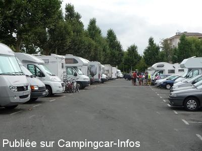

APN = Parking toléré jour/nuit de :
ANNECY
(N° 277)
Accès/adresse :
Place des Romains
74000 ANNECY
74000 ANNECY
Latitude : (Nord) 45.90814° Décimaux ou 45° 54′ 29′′
Longitude : (Est) 6.122° Décimaux ou 6° 7′ 19′′
Tarif : Gratuit
Services :

Très proche centre-ville et tous commerces.
Autres informations :
Grand parking, goudronné et éclairé, en partie ombragé, à partager avec voitures
http://www.tourisme.fr/office-de-tourisme/annecy.htm
Stationnement interdit le mardi, jour de marché et certains week-ends

Le 08/08/2009 par Xtian74
de
franze
le 17/08/2013 :
Apres un bref passage dans cette ville En juin 2013.
Ville a eviter les campincariste n sont pas es bien venu
Apres un bref passage dans cette ville En juin 2013.
Ville a eviter les campincariste n sont pas es bien venu
de
majelan
le 20/04/2010 :
Passé 2 nuits (16-17-18 avril) : effectivement tranquille la nuit avec peu de CC.
Passé 2 nuits (16-17-18 avril) : effectivement tranquille la nuit avec peu de CC.
de
Xtian74
le 28/01/2010 :
Gilou17 n'a sûrement pas dormi içi ! Il est certain qu'en journée, trouver une place est une gageure et qu'il y a un va et vient important, mais en soirée tous les véhicules partent et passées 22 heures, vous serez quasiment seuls sur cette grande place. Les nuits y sont tranquilles (heureusement pour moi qui habite à deux pas et voit la place depuis mes fenêtres). Evitez toutefois d'y passer la nuit du lundi au mardi, sinon il vous faudra dégager à 7 heures le lendemain.
Gilou17 n'a sûrement pas dormi içi ! Il est certain qu'en journée, trouver une place est une gageure et qu'il y a un va et vient important, mais en soirée tous les véhicules partent et passées 22 heures, vous serez quasiment seuls sur cette grande place. Les nuits y sont tranquilles (heureusement pour moi qui habite à deux pas et voit la place depuis mes fenêtres). Evitez toutefois d'y passer la nuit du lundi au mardi, sinon il vous faudra dégager à 7 heures le lendemain.
de
Xtian74
le 08/08/2009 :
Incroyable ! 25 CC ont passé la nuit sur le parking des Romains (voir la photo)! Du jamais vu depuis plus de dix années que j'habite à quelques dizaines de mètres.
Des compatriotes bien sûr, mais aussi des étrangers. Se seraient-ils donnés le mot pour arriver en fin de journée hier, alors que le parking était quasiment vidé des voitures ?
Ils sont là, à n'en pas douter, pour les fêtes du Lac qui attirent chaque premier week-end d'août un monde fou, plusieurs dizaines de milliers de spectateurs produisant des embouteillages monstres.
Le thème pour 2009 est "Le Voyage de Marco Polo".
Bon séjour à Annecy
Incroyable ! 25 CC ont passé la nuit sur le parking des Romains (voir la photo)! Du jamais vu depuis plus de dix années que j'habite à quelques dizaines de mètres.
Des compatriotes bien sûr, mais aussi des étrangers. Se seraient-ils donnés le mot pour arriver en fin de journée hier, alors que le parking était quasiment vidé des voitures ?
Ils sont là, à n'en pas douter, pour les fêtes du Lac qui attirent chaque premier week-end d'août un monde fou, plusieurs dizaines de milliers de spectateurs produisant des embouteillages monstres.
Le thème pour 2009 est "Le Voyage de Marco Polo".
Bon séjour à Annecy
de
Xtian 74
le 25/01/2008 :
La quasi totalité des bornes de services du département est hors de service pour cause de gel quand ce n'est pas l'aire de stationnement elle-même qui est fermée (La Balme-de-Sillingy par ex.). Pour compléter vos réservoirs d'eau claire, les toilettes de la place des Romains constituent une bonne solution (avec un bidon et un tuyau). Ciao
La quasi totalité des bornes de services du département est hors de service pour cause de gel quand ce n'est pas l'aire de stationnement elle-même qui est fermée (La Balme-de-Sillingy par ex.). Pour compléter vos réservoirs d'eau claire, les toilettes de la place des Romains constituent une bonne solution (avec un bidon et un tuyau). Ciao
de
Xtian 74
le 18/10/2007 :
Bloc sanitaire avec eau, en sous-sol, au nord ouest de la place, entre l'avenue des Romains et l'avenue du Stade.
Bloc sanitaire avec eau, en sous-sol, au nord ouest de la place, entre l'avenue des Romains et l'avenue du Stade.